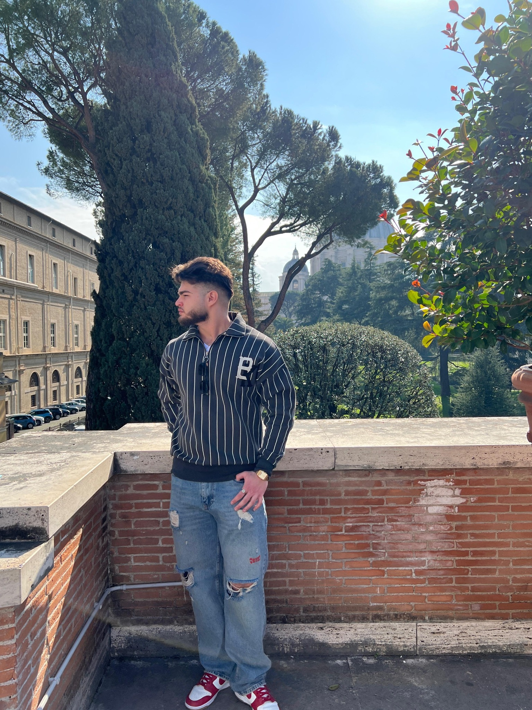

Curriculum Vitae
Bucur Nicolae

Adresă: Strada Dimitrie Cantemir, nr 25
Telefon: 0726 689 200
Email: bucurnicolae81@email.com
Experiență profesională
- 2023 - prezent: Programator Front-End, WebTech Solutions – Dezvoltare interfete web moderne
Educatie si formare
- 2023 - prezent: Universitatea Politehnica din Bucuresti – Licenta in Informatica
- 2019 - 2023: Colegiul National „Nichita Stanescu” – Profil Matematica-Informatica
Competențe personale
Limbi străine:
- Engleza – Avansat
- Franceza – Mediu
Competente digitale:
- Microsoft Office
- HTML, CSS, JavaScript
- Git, VS Code
Alte competente:
- Comunicare eficienta
- Lucru în echipa
- Gandire analitica
Informatii suplimentare
- Premiul Mentiune la Chimie Mediu anul 2022
- Proiect: Reactorul cu Torriu - 2022
- Voluntar în cadrul ONG „AUSF” – 2020-2023